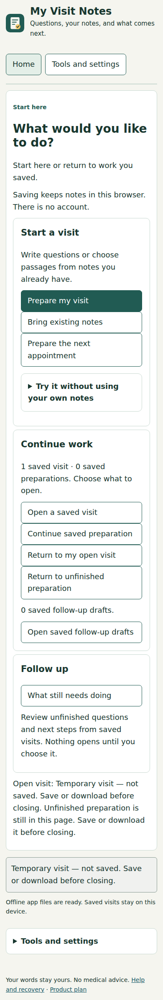
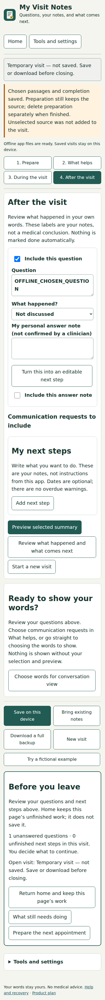

1 / 12 · The decision
Connect the whole appointment journey
My Visit Notes already prepares questions, shows chosen words, records personal answers and helps with follow-up. This goal gives those tools a clear order, from opening the app to returning for another appointment.
Speaker notes
The earlier main page placed recovery, transfer and follow-up explanations above the active visit. That is an observed layout, not a participant finding. We are proposing a clearer structure, not claiming proven reduced effort.
2 / 12 · Home
Start, continue or follow up
Home separates three purposes. Start a visit with questions or existing notes. Continue a saved visit or preparation. Follow up on unfinished items. Initial counts do not reveal visit titles, dates, questions or private notes.

Speaker notes
The fictional example is optional and sits inside a disclosure. Opening a saved list is deliberate. Home does not automatically reopen the last visit after a reload.
3 / 12 · Current work
Keep the active visit prominent
Visit steps and the current task come before supporting explanations. Tools and settings gives access to recovery, transfer, saved-work lists, reading choices and offline setup. Those capabilities are still available.
Speaker notes
The redesign moves controls; it does not remove them. Tests must use the actual new routes. Forcing hidden controls in tests would not demonstrate that a person can reach them.
4 / 12 · Preparation
Make the destination clear before adding words
Typing questions and selecting passages from notes lead into the same visit flow. The destination is named before confirmation. Resuming preparation keeps its selected passages and completion records.
Speaker notes
Source text is not automatically copied into a visit or a shared summary. Existing completion records prevent adding a previously completed batch again. Destination choices remain explicit.
5 / 12 · Switching visits
Do not quietly move unfinished preparation
If passages were intended for an open visit, opening another visit must not redirect them. A saved destination keeps its identity. A temporary destination keeps a copy of the earlier draft, including edits made before switching.
Speaker notes
This is more than moving buttons. The audit found a route where an Open visit destination could follow whichever visit happened to be open later. The implementation pins the earlier destination and repeats it in review.
6 / 12 · During the appointment
Review, choose and show
The workspace explains the route from questions and communication requests into the existing conversation view. Chosen words still need explicit selection and preview. Private notes remain outside that display.
Speaker notes
Requests-only use still works. Escape hides the message; leaving deliberately returns to private work. The conversation view is not a lock on an unlocked device.
7 / 12 · Finishing
Say what remains and what is saved
Review keeps the existing questions, personal answers and next steps. A finishing section counts unfinished items without ranking them or marking them done. Home keeps the page’s work; it does not save it.

Speaker notes
Save messages distinguish temporary, waiting, failed, conflicting and saved work. A completed download is not treated as a saved visit or as proof that a backup is safely stored elsewhere.
8 / 12 · Unfinished messages
Return without losing the words
A temporary follow-up message can be closed and reopened from Home with its exact edits. Creating another message asks before replacing it. Discarding also asks for confirmation. Copying or downloading sends nothing.
Speaker notes
A retained message is a snapshot. Later changes to saved visits do not rewrite it. It remains only in this page and must be copied or downloaded before closing the browser page.
9 / 12 · Unfinished progress
Keep the entry, but respect newer saved work
Unsaved progress fields can also be reopened from Home. Saving still checks the original item and saved version. Another tab’s changes or deletion cannot redirect that entry or silently overwrite newer work. A private download remains available.
Speaker notes
A waiting save is cancelled if its dialog closes. Returning to the retained entry does not automatically retry it. Test both the stored record and the retained words, not merely the presence of a success message.
10 / 12 · Evidence
Check complete journeys and difficult returns
12 of 12 recorded journey checks passed. The suite checks saving failures, waiting writes, conflicts, retained work, offline return and the redesigned screens. Existing feature suites remain required release checks.
- JY01 — Complete Home, visit, preparation, message and progress return with pinned destination: passed
- JY02 — Failed visit save remains unsaved on Home and the open draft survives: passed
- JY03 — Home reports a waiting save and refreshes after the actual write: passed
- JY04 — A retained progress draft cannot overwrite another tab and can be downloaded: passed
- JY05 — Closing a waiting progress save retains the draft and cancels the write: passed
- JY06 — Saved preparation returns offline to the same destination and enters conversation: passed
- JY07 — Home closes private lists and retains keyboard access to tools: passed
- JY08 — Empty lists, large reading choices and long wording fit the redesigned shell: passed
- JY09 — Message replacement is deliberate and retained text can be downloaded unchanged: passed
- JY10 — Opening another progress item asks before discarding; deletion cannot redirect a retained draft: passed
- JY11 — Complete browser restart offline opens neutral Home then the chosen saved visit: passed
- JY12 — Keyboard-only start, save, Home, saved return, conversation and finish: passed
Recorded 2026-09-16T21:52:52.316Z. Individual results and tested files.
Speaker notes
This count describes the latest recorded run, not automatic release approval. Consult the acceptance audit and matching archive verification. Software checks do not show that people find the app easier.
11 / 12 · Boundaries
Be clear about what was not tested
All examples are fictional. No participants, real appointments, physical-phone review or screen-reader review are claimed. Narrow views and keyboard checks are useful engineering evidence with limits.
Speaker notes
No recruitment is needed to finish this engineering goal. Later evaluation could compare the complete journey with paper or an ordinary notes app, but no result from that evaluation exists yet.
12 / 12 · Finish line
Deliver the journey with its instructions and proof
The delivery includes the working redesign, detailed requirements, twelve fictional journeys, this executive briefing and speaker notes, updated help and an acceptance map. The downloadable package must pass the full journey after extraction.
Speaker notes
Approval requires current test evidence, preserved existing capabilities, inspected screens and documents, matching packaged files and an identical rebuild. Do not approve the current app using an earlier release’s successful checks.